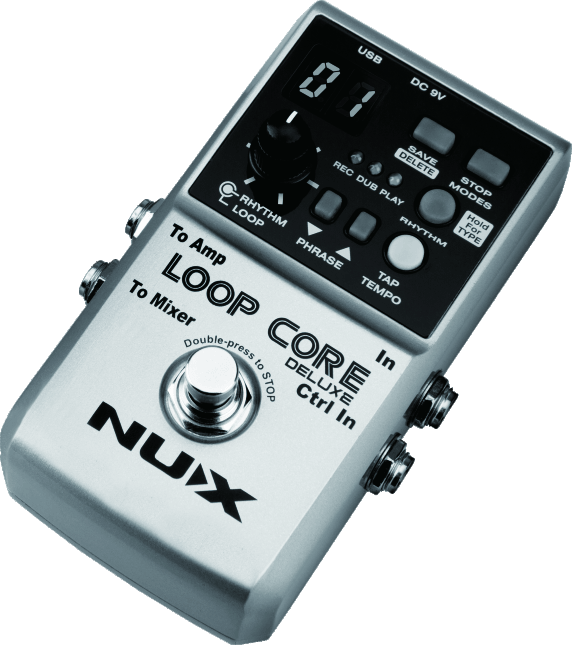
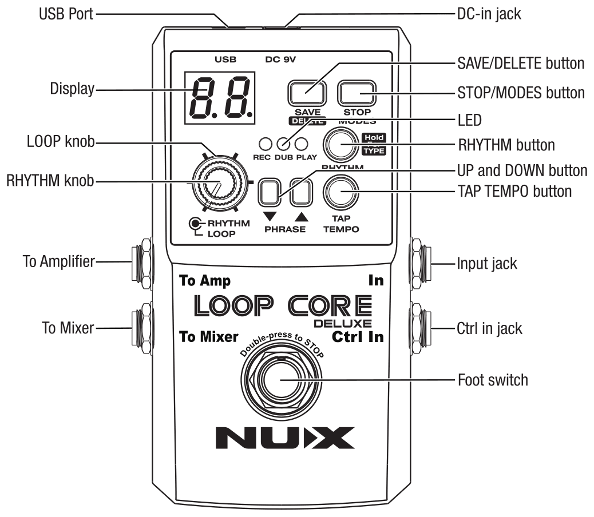
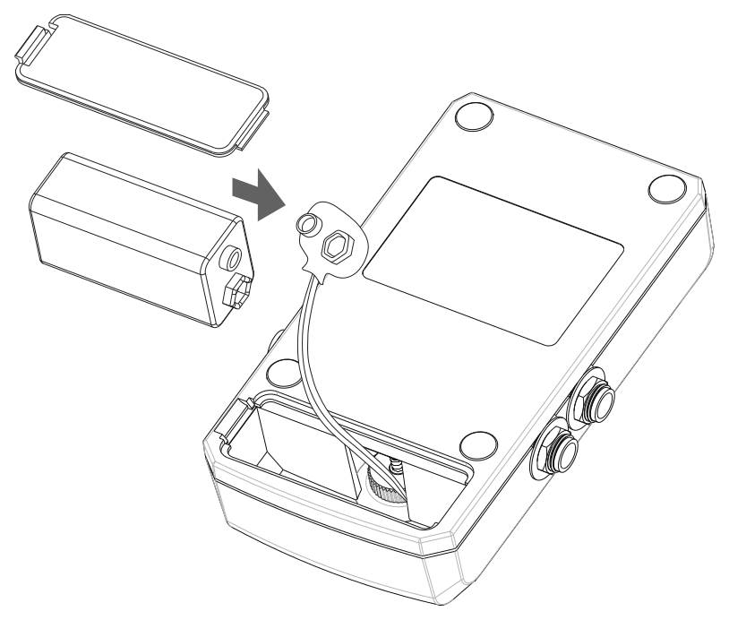
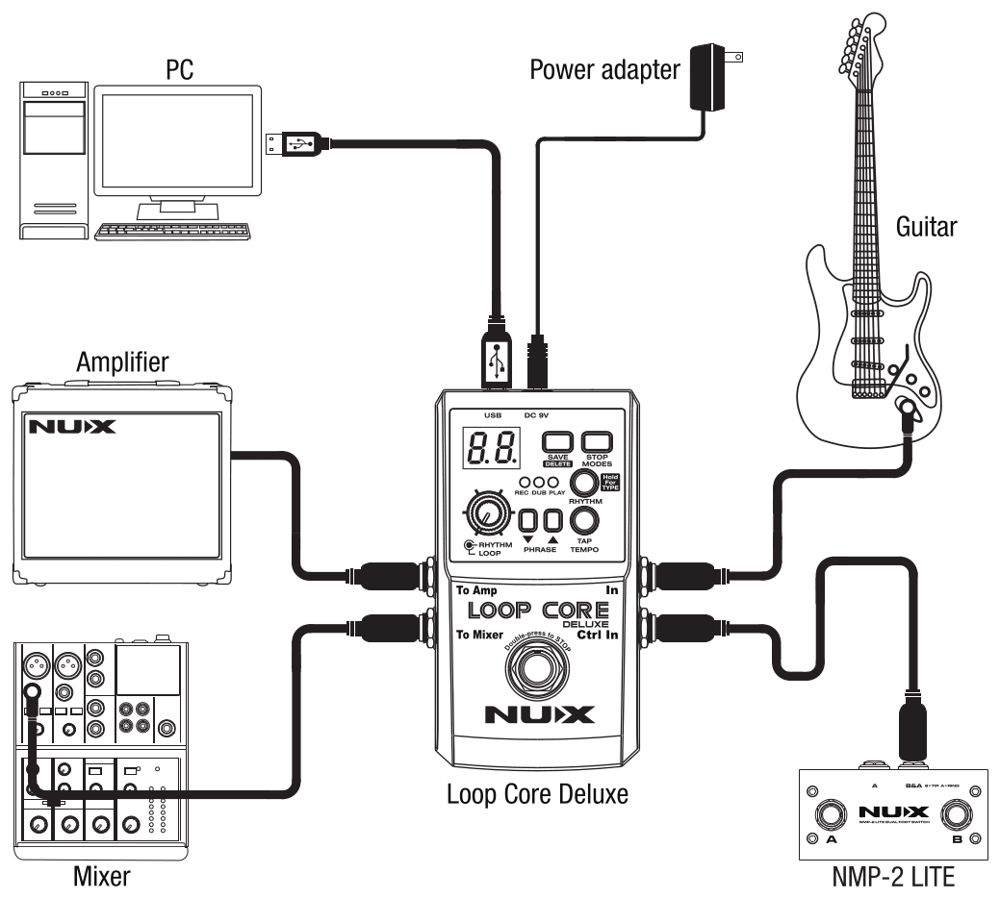
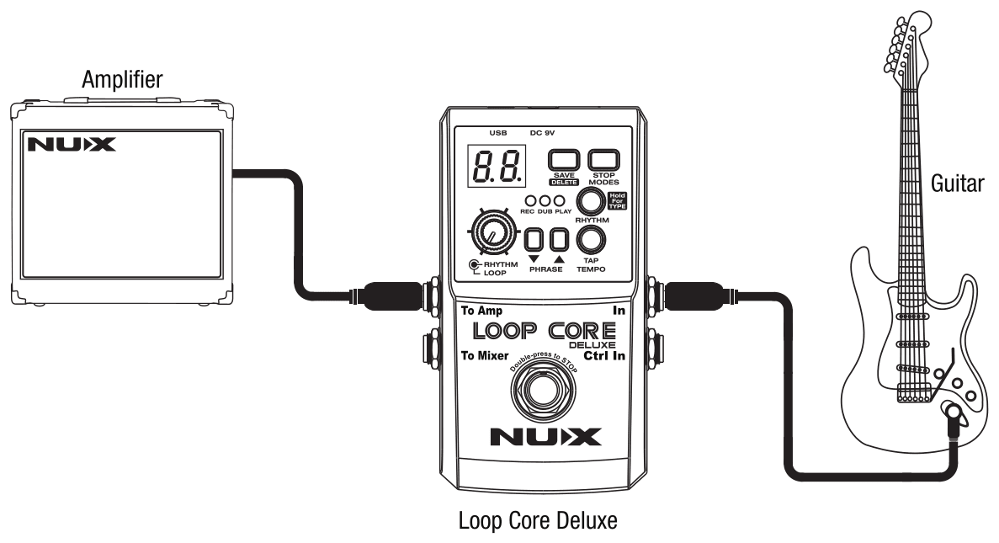
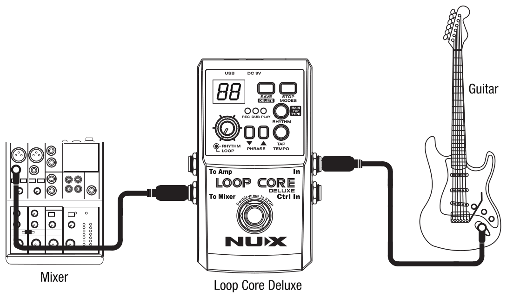
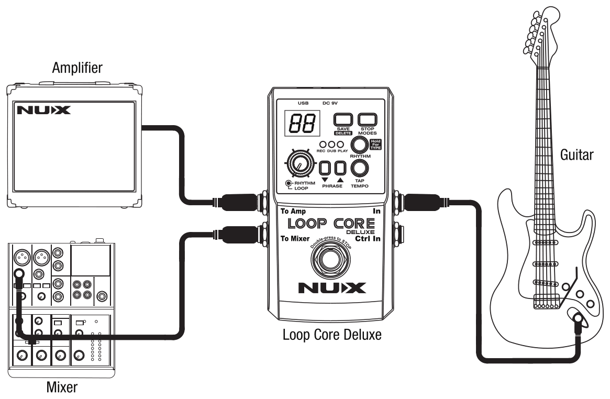
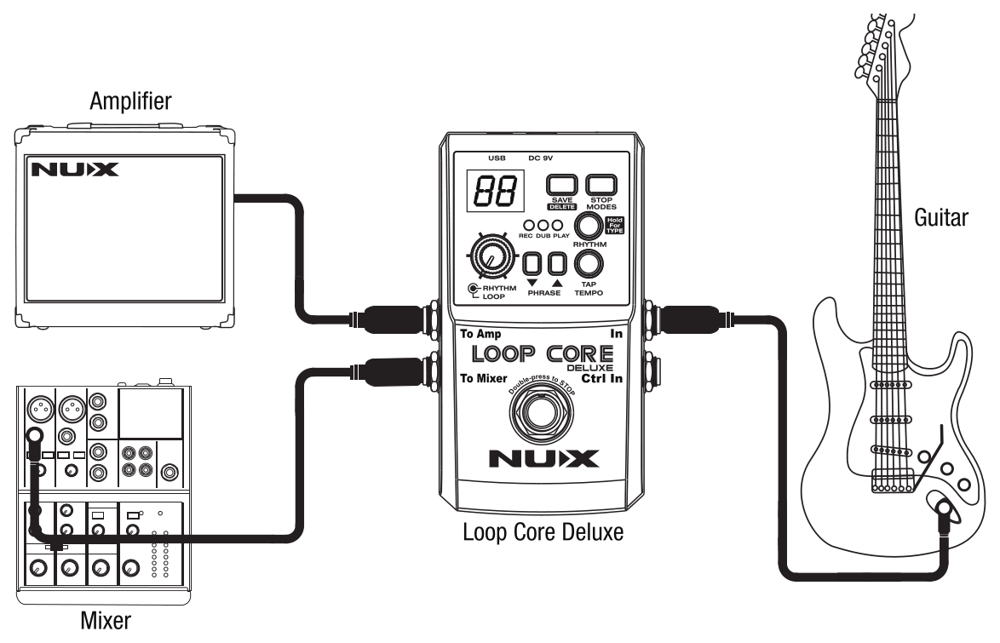
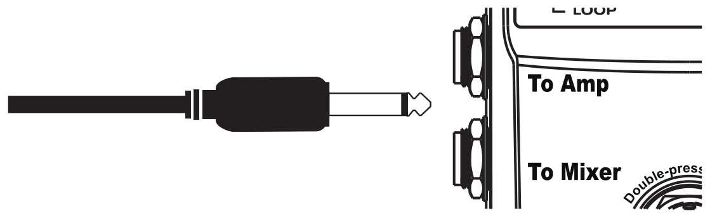

Owner's Manual
Safety Instructions
Copyright
Copyright 2017 Cherub Technology Co. All rights reserved. NUX and LOOP CORE DELUXE are trademarks of Cherub Technology Co. Other product names modeled in this product are trademarks of their respective companies that do not endorse and are not associated or affiliated with Cherub Technology Co.
Accuracy
Whilst every effort has been made to ensure the accuracy and content of this manual, Cherub Technology Co. makes no representations or warranties regarding the contents.
WARNING: To reduce the risk of fire or electric shock, do not expose this appliance to rain or moisture.
CAUTION: To reduce the risk of fire or electric shock, do not remove screws. No user-serviceable parts inside. Refer servicing to qualified service personnel.
CAUTION: This equipment has been tested and found to comply with the limits for a Class B digital device pursuant to Part 15 of FCC Rules. Operation is subject to the following two conditions: (1) This device may not cause harmful interference, and (2) this device must accept any interference received, including interference that may cause undesired operation.
The lightning symbol within a triangle means “electrical caution!” It indicates the presence of information about operating voltage and potential risks of electrical shock.
The exclamation point within a triangle means “caution!” Please read the information next to all caution signs.
- Use only the supplied power supply or power cord. If you are not sure of the type of power available, consult your dealer.
- Do not place near heat sources, such as radiators, heat registers, or appliances which produce heat.
- Guard against objects or liquids entering the enclosure.
- Do not attempt to service this product yourself, as opening or removing covers may expose you to dangerous voltage points or other risks. Refer all servicing to qualified service personnel.
- Servicing is required when the apparatus has been damaged in any way, such as when the power supply cord or plug is damaged, liquid has been spilled or objects have fallen into the apparatus, the apparatus has been exposed to rain or moisture, does not operate normally or has been dropped.
- The power supply cord should be unplugged when the unit is to be unused for long periods of time.
- Protect the power cord from being walked on or pinched particularly at plugs, convenience receptacles and at the point where they exit from the apparatus.
- Prolonged listening at high volume levels may cause irreparable hearing loss and/or damage. Always be sure to practice “safe listening”.
Follow all instructions and heed all warnings
KEEP THESE INSTRUCTIONS!
Introduction
Welcome to Loop Core Deluxe
Thank you for choosing the NUX Loop Core Deluxe Pedal! As an upgraded version of the original NUX Loop Core, Loop Core Deluxe allows you to record and create music phrases and play them back as loops! Whether you practice, compose, or play live gigs, you will get inspired by the well-considered functions of Loop Core Deluxe.
Please take the time to read this manual carefully to get the most out of the unit. We recommend that you keep the manual at hand for future reference.
Features
- Record and overdub as you need.
- Up to 8 hours recording time.
- 99 user memories.
- Built-in rhythm tracks with 40 patterns, TAP Tempo function.
- Optimized drum machine frequency compensation function for 1x12 guitar amplifier.
- Cab simulation function.
- Buffer function to compensate signal attenuation.
- Change the playback tempo of your recorded phrase without changing the key.
- Switching phrases without latency.
- Extensional pedal (optional) for more control.
- Import and back up phrases with PC.
- True-Bypass.
- 24bit Loop Pedal with drum machine.
Product Interface

Display
It indicates the memories and rhythm number and other setting information.
LOOP knob
To adjust the playback volume level of the recorded audio.
RHYTHM knob
To adjust the volume level of the internal rhythm tracks.
SAVE/DELETE button
To save the current phrase or delete the phrase in current memory.
STOP/MODES button
To select the way you want to stop during playback after you press pedal to stop.
RHYTHM button
This is for turning on/off the rhythm or selecting rhythm patterns. (Pressing this button before powering on the device lets you activate the presets between application 3 (F3) and application 4 (F4).)
LED indicator
REC
The red light indicates that you are recording.
DUB
The orange light indicates that you are overdubbing.
PLAY
The green light indicates that it’s during playback of current phrase.
During overdubbing, both DUB and PLAY will light up.
TAP TEMPO button
Press this several times in time to set the tempo of rhythm. This can change the playback speed of a saved loop.
UP and DOWN button
These decrement or increment the number shown in the display.
Foot switch
To record, overdub and play back; you also press this pedal to stop, undo/redo and clear recording. (Please see the instructions below for details.)
USB port
Connect the Loop Core Deluxe to your PC with a mini USB cable to import or back up audio data.
DC-in jack
Loop Core Deluxe requires 9V DC/300mA with negative tip. Use the power supply with identical specifications (e.g. the optional NUX ACD-006A).
Input jack
This is a mono input. Plug your guitar or other instruments into this jack.
Ctrl In jack
This is for connecting extensional pedals to stop playback, clear a phrase, switch memories, or tap tempo. (Please see the instructions below for details.)
To Amp Out
This outputs the signal to your guitar amp.
To Mixer
This outputs the signal to your mixer.
About Battery
One 9V (6LR61) battery is supplied with the unit for testing purposes only. When the battery is running out, the sound of the unit gets distorted. If this happens, please replace it with a new battery. To avoid unnecessary energy consumption, please unplug the output jacks. We highly recommend you choose the NUX ACD-006A power adapter, as the unit’s power consumption is relatively high.
NOTICE:
When you see the “Lo” sign blinking on the display, it means that the battery is running low and you should get a new battery for it.

Connections

Here we’ve listed 4 possible applications of Loop Core Deluxe.
Application 1
Direct output to a guitar amplifier is the most common way guitar players use a loop pedal. If you’re connecting Loop Core Deluxe to a 1x12 guitar amplifier, we’d suggest you turn on the frequency compensation function. (Press the Save/Delete button before powering on the device to turn it on or off.)

Application 2
ONLY output to mixer, soundcard or full range speakers. Please turn on the frequency compensation function to get a guitar sound with cab simulation tone.

Application 3 (To Amp outputs guitar signal, To Mixer outputs drum machine)
When using Loop Core Deluxe as in the situation below, it will detect the type of devices connected. Original guitar tone and loop phrase will output to the guitar amplifier while the drum machine sound outputs to the mixer.

Application 4 (Both jacks output guitar sound and drum machine sound)
Use 2 outputs simultaneously: connect Loop Core Deluxe to the mixer via the stereo channel. When both outputs are connected to the mixer, stereo sound comes from Amp out and Mixer out. We’d suggest you turn on the frequency compensation function to get a better sound. (Press the Save/Delete button before powering on the device to turn it on or off.)

Power ON/OFF
When running the unit on battery power, inserting a plug into the To Amp jack will automatically switch the unit on. To prevent malfunction or damage to speakers or other devices, always turn down the volume, and turn off the power on all devices before making any connections. Once the connections have been completed, turn on power to your various devices in the order specified. By turning on devices in the wrong order, you risk causing malfunction and/or damage to speakers and other devices.
When powering up: Turn on the power to your guitar amp last.
When powering down: Turn off the power to your guitar amp first.

Operation Instructions
1. To Record and Create a Loop Phrase
1.1 Normal Recording Mode (Default)
1.1.1 Select an empty memory location by pressing the Up and Down arrows. The display shows the current memory number. A dot at the bottom right corner of the display means the current memory number already has data saved. If there is no dot, it means the current memory number has no data, and you can start to create a new loop and save it in this memory location.
1.1.2 RECORD: Press the pedal to start to record a loop.
1.1.3 OVERDUB: After a loop was recorded, you can record overdubs on it. Each time you press the pedal, the sequence is: Rec-Play-Overdub.
NOTE: You can change this sequence to: Record-Overdub-Play by following this:
While holding down the pedal, turn on the power by inserting the DC jack and plugging a cable into the To Amp jack. The display will show “rd” or “rP”; you can select either one by pressing the arrow buttons, and press the pedal once again to confirm.
“rd” for Record-Overdub-Play.
“rP” for Record-Play-Overdub.
NOTE: To overdub on the current phrase, Loop Core Deluxe requires that the total remaining recording time must be longer than the time of the current phrase. If the DUB LED light keeps blinking after you overdub, it means you cannot overdub under such status.
1.1.4 STOP: During playback or overdubbing, double-press the pedal (press the pedal twice within 1 sec) to stop.
1.2 Auto Recording Mode
You can temporarily set the Loop Core Deluxe to Auto Recording mode by following the steps below:
1.2.1 Under an empty memory slot, press and hold the STOP/MODES button for 2 sec, “nr” will be blinking on the display; press the STOP/MODES button again within 2 sec to change it to “Ar” to enable Auto Recording mode.
1.2.2 Under this mode, the first time you press the pedal will enter recording standby status, and the REC LED will be blinking. It automatically starts recording as soon as it detects input sound signal from the Input jack.
1.2.3 Overdubbing and playback are the same as normal recording mode.
NOTE: Changing to Auto Recording mode only functions temporarily for the current memory location. Switching to the next memory number will go back to Normal Recording mode, which is the default mode for Loop Core Deluxe.
1.3 Undo/Redo/Clear
UNDO
During overdubbing or playback, you can hold down the pedal for 2 sec to undo (cancel) the most recent overdubbing.
REDO
During playback, pressing and holding the pedal for 2 sec restores the overdubbing that you have just canceled.
*Redo is only for restoring overdubbing. There will be a little dot displayed in the middle of the two digits to indicate that you have data that can be restored.
CLEAR
You can clear all recording data in this memory by holding the pedal down for 2 sec while stopped. (Already saved data will not be cleared this way, which is different from DELETE (see 1.8).)
1.4 Stop Modes
Loop Core Deluxe has three stop modes that you can choose to finish the playback.
1.4.1 Before starting to play a loop or during playback, you can press the STOP/MODES button to select the way you want the loop to end after you double-press the pedal.
- “St”: instantly stops.
- “Fn”: stop at the ending of this loop.
- “FA”: fade out and stop in 10sec.
1.4.2 If you choose “Fn” or “FA”, after you double-press the pedal during playback, the PLAY LED will start blinking until it finally stops. If you still want the loop to end instantly during the time when the PLAY LED is blinking, just quickly press the pedal once again.
1.5 Switching Memory Numbers/Loops
You can press the Up and Down buttons to switch memory numbers/loops, or use the optional extensional pedal (see 3).
During playback, if you switch to another loop, the number of the chosen phrase will start blinking, and when the current loop reaches its end, the chosen loop will start playing. The transition has NO GAP, so it is perfect for creating a complete backing track that has verse and chorus!
1.6 Save a Loop to Memory
Once you have created a music loop, you can save it to memory. You can save up to 99 memories. Each memory can be as long as you want until it reaches the memory limit. Loop Core Deluxe is equipped with 8GB memory; maximum recording time is about 8 hours.
1.6.1 Short press the SAVE button and you will see the memory number and “SA” blinking on the display in turn.
1.6.2 Press Up or Down to choose an empty memory location (the bottom right corner of the display has no dot), and press SAVE again to confirm the storage. Or, you can press any button other than SAVE and Up/Down to abandon saving.
1.6.3 All the data including recordings, stop mode, tempo and the selected rhythm pattern will be saved. But recording mode will not be saved. Auto Recording mode can only be temporarily set (see 1.2).
NOTE: You cannot save to a memory location that already has data. During step 1.6.2, if you press the Up or Down button and the next memory number already has data, it will lead you to the closest empty memory location.
1.7 Copy a Loop Phrase
You may want to copy a saved loop to another memory location by following the steps below:
1.7.1 Choose the memory loop that you want to copy.
1.7.2 Short press the SAVE/DELETE button and you will see the memory number on the display start blinking.
1.7.3 Press Up or Down to choose an empty memory location (the bottom right corner of the display has no dot), and press SAVE/DELETE again to confirm the storage.
NOTE: If the remaining memory is not enough for copying the chosen loop, the display will show “FU”.
1.8 Delete a Memory
1.8.1 Press and hold the SAVE/DELETE button for two seconds; you will see “dL” blinking on the display.
1.8.2 Press SAVE/DELETE once again to confirm deleting. Or, you can press any button other than SAVE/DELETE to abandon deleting.
1.8.3 All the data including recordings, stop mode, tempo and the selected rhythm pattern will be deleted.
2. Rhythm Tracks
Loop Core Deluxe has built-in rhythm tracks with 40 patterns, ranging from metronome click to drum tracks that cover various music styles. You can use the rhythm to guide your recording, or even after you finish recording, you can turn on the rhythm tracks, and it will smartly and immediately find your beat and follow!
2.1 Press RHYTHM or double-press the TAP TEMPO button to turn on the rhythm. The default sound is metronome click. The rhythm button blinks to indicate the tempo. If you start the rhythm after the loop has been recorded, the Loop Core will automatically detect the tempo of the loop.
2.2 The TAP TEMPO button lights up to indicate that you can use it to set tempo. If this button does not light up, it means tap tempo is not possible in such status, i.e. during recording or overdubbing.
2.3 Long press the TAP TEMPO button to switch time signature between 4/4 and 3/4 beat.
2.4 Press and hold the RHYTHM button for 2 sec, and you will see the pattern number blinking on the display.
2.5 Use the Up and Down buttons to set your desired tempo.
2.6 Use the TAP TEMPO button to set your desired tempo.
2.7 Rhythm types of Loop Core Deluxe:
| 4/4 Beat List | |
|---|---|
| 01 | Metronome 4/4 |
| 02 | Rock 1 |
| 03 | Rock 2 |
| 04 | Rock 3 |
| 05 | 60S |
| 06 | Blues 1 |
| 07 | Blues 2 |
| 08 | Country 1 |
| 09 | Cumbia |
| 10 | Reggae |
| 11 | Jam |
| 12 | Jazz 1 |
| 13 | Native |
| 14 | Indie Rock |
| 15 | Pop 1 |
| 16 | Pop 2 |
| 17 | Pop 3 |
| 18 | Punk 1 |
| 19 | Punk 2 |
| 20 | Punk 3 |
| 21 | Metal 1 |
| 22 | Metal 2 |
| 23 | Metal 3 |
| 24 | R & B |
| 25 | Straight 1 |
| 26 | Straight 2 |
| 27 | Dance House |
| 28 | Dance House01 |
| 29 | Latin 1 |
| 30 | Latin 2 |
| 3/4 Beat List | |
|---|---|
| 01 | Metronome 3/4 |
| 02 | Begin |
| 03 | Blues 3/4 |
| 04 | Arena 3/4 |
| 05 | Ballad 3/4 |
| 06 | Circle 3/4 |
| 07 | Groove 3/4 |
| 08 | Jazz 3/4 |
| 09 | Motown 3/4 |
| 10 | Rock 3/4 |
3. Using Extensional Control Pedals
You can plug an extensional control pedal into the Ctrl In jack, i.e. NUX NMP-2 LITE (optional), to have more hands-free controls during live performance:
3.1 Plug the NMP-2 LITE into the Ctrl In jack on Loop Core Deluxe with the footswitch of the NMP-2 LITE NOT pressed for at least 1 second, so that the Loop Core Deluxe can recognize the pedal.
3.2 Stop: Short press footswitch A of the NMP-2 LITE once to stop during recording, overdubbing and playback. Same as double-pressing the pedal of Loop Core Deluxe.
3.3 Tap Tempo: Press NMP-2 LITE (Switch A) several times in time to set the tempo while stopped.
3.4 Clear Loop: Pressing and holding NMP-2 LITE (Switch A) will clear all the recordings that have not been saved.
3.5 You can also plug in the NMP-2 LITE through its jack B&A to Ctrl In; footswitch B/A can be used to switch recording phrases (Up and Down).
4. USB Connection
Turn on the power of Loop Core Deluxe by connecting the power adapter and plugging a cable into “To Amp” or “To Mixer”. Connect a USB cable between Loop Core Deluxe and your PC. The display of Loop Core Deluxe will show “” when it is connected successfully. Now you can import WAV files to Loop Core Deluxe or back up the recording phrases from Loop Core to your PC:
4.1 To import a WAV file to Loop Core Deluxe.
4.1.1 Click and open the removable disk of Loop Core Deluxe, and open the “LOOPER24” folder.
4.1.2 Open the WAV folder, and there will be 99 folders for 99 memory numbers: “W001” “W002”…“W099”. Choose one empty folder that you want to import a WAV file to. For example: folder “W031”.
4.1.3 Copy the WAV file from your computer to the folder “W031”, and rename this WAV file to “W031.wav”.
4.1.4 This WAV file is imported successfully and can be played as a loop in memory number 31 in Loop Core.
NOTE: Loop Core Deluxe accepts WAV files that are 24-bit, Stereo, 44.1kHz.
4.2 To back up and recover phrases from Loop Core Deluxe to your PC.
4.2.1 Copy the “LOOPER24” folder to your PC to back up.
4.2.2 Copy the “LOOPER24” folder from your PC to replace the “LOOPER24” folder in Loop Core Deluxe to recover.
WARNING: Do NOT power off or unplug the device when it’s transferring data.
5. Formatting Loop Core Deluxe
In case you want to reset the Loop Core Deluxe back to factory settings, you can format the Loop Core Deluxe by the following steps:
5.1 Power on the Loop Core Deluxe while pressing down the foot switch until the display shows “rd” or “rP”.
5.2 Press and hold the Up or Down button for 2 sec until the display shows “F0”.
5.3 Press the pedal once again to confirm formatting. Or, press any other button to abandon formatting.
- Formatting the NUX Loop Core Deluxe will wipe away all recordings from it and set everything to factory settings. Please back up all your data before you format the device.
- Please do not power off your device until the formatting process is completed.
Specification
- Sampling rate: 44.1kHz
- A/D converter: 24bit
- Signal Processing: 24bit
- Frequency response: 20Hz-20kHz
- Noise Level: -98dBu
- Dynamic Range: 101dB
- Power Consumption: 65mA-70mA
- Input: Mono
- Output: To Amplifier, To Mixer
- Display: LED & LED segment displays
- Power: 6LR61 battery (9V) or 9V negative tip power adapter
- Dimensions: 122mm(L) x 72mm(W) x 47mm(H)
- Weight: 270g
* Specifications are subject to change without prior notice.
Accessories: Cables, 9V Battery, User Manual.